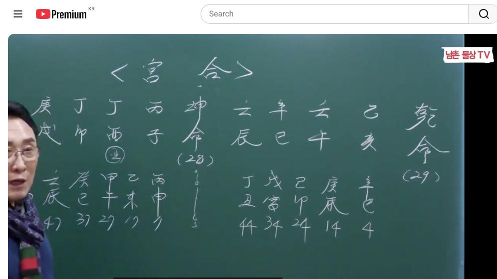
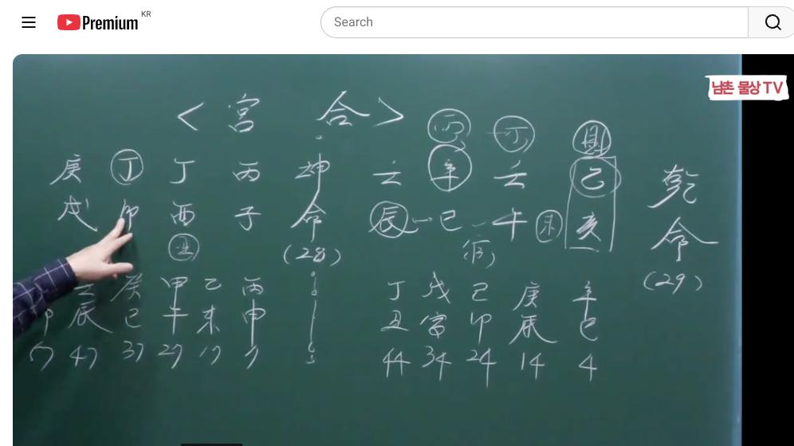

남촌물상TV 전체 문서 › 동영상 V0032
[실전사례]10 여자 복에 남자 출세하고 남자 복에 여자 재벌되는 궁합 상담문의 : 010-3139-6645

| 문서 번호 | V0032 (동영상) |
|---|---|
| 영상 URL | https://www.youtube.com/watch?v=vCIDMT-SxVQ |
| 영상 ID | vCIDMT-SxVQ |
| 게시일 | 2023-12-18 |
| 길이 | 24:18 (1458초) |
| 조회수 | 3,564회 (수집 시점 기준) |
| 카테고리 | Howto & Style |
| 자막 | ko (자동생성) |
| 수집 시각 | 2026-08-30 17:03 (KST) |
영상 설명 (YouTube 설명 원문 그대로)
이런사람 선택하면 여자 복에 남자 출세하고 남자 복에 여자 갑부되는 궁합 #부부궁합 #실전사례 #결혼궁합
전체 자막 (501구간 · 타임스탬프 클릭 시 해당 장면으로 이동)
[0:01][음악]
[0:08]자 오늘은 이제에 뭘 할 거냐 뭐 할
[0:12]거냐 오늘은 이제이 맨날 사주만 풀다
[0:15]보니까 아 또 궁합에 한번 풀어
[0:18]드리렵니다
[0:19]궁합이라는 것은 우리가 보통 보면
[0:22]지금 뭐 무슨 궁합을 봐야 이렇게 늘
[0:25]사회적으로 얘기를 많이 하죠 그런데
[0:27]궁합은 굉장히 필요한 거예요 제가
[0:30]이제 여기 오랫동안에
[0:34]머을 담다
[0:35]보니까 궁합이란 자체가 뭔가를 이해를
[0:39]못 하신 분 계시는데 궁합은 서로
[0:43]남녀간에 필요하기 때문에 존재한다는
[0:46]거예요 그것이 필요해서 존재하느냐 안
[0:50]하느냐를 구별하는게 궁합입니다 이제
[0:53]이걸 가지고는 궁합이라고 그래요
[0:56]근데 옛날에 무슨 속궁합이 좋니 뭐
[0:59]궁합이 좋니이 많이 돼 그 의미는
[1:01]별로 중요하지 않아요 지금 시대는
[1:05]자본주의 시대로 해서 물질적인 면이
[1:07]어느 쪽에 더 강하냐 또 같은 그
[1:11]남녀끼리 오행이 뭘 주고 받느냐에
[1:14]따라서 내가 서로 융합을 이루어지느냐
[1:17]아니냐 이게 바로 궁합입니다 근데
[1:20]이제 고전에서 얘기하는 뭐 궁합은 뭐
[1:22]띠 궁합이 좋니 뭐 속궁합이 어쩌냐
[1:24]하고 그런데 그거는 저는 필요
[1:26]없어요음 물상 우리 물에서는 그걸
[1:29]따지 않습니다
[1:32]이 궁합은 제가 지난번에 이번에 그
[1:36]그 며칠 전에 중국에서 전화로
[1:39]상담했던 그 궁합을 보던 사주를
[1:42]가지고 여러분들한테 궁합을 지금 보고
[1:45]있습니다 자 남자 사주 을해 임모
[1:49]신사
[1:51]임진 여자사주 병자 정유 정 정묘
[1:56]경술 자 이런 사주의 궁합을 보면은
[2:00]어 얼마 어떤 분이 뭐 때문에이
[2:03]사람이 좋아하고 뭐 때문에 필요해서
[2:06]어떤
[2:08]점이이 나한테 뭔가를 끌롱 감이 뭐
[2:12]있겠느냐 하는 것을 마음으로 읽어내는
[2:15]안보까지 포함해서 설명을
[2:17]드리겠습니다 그러면 자 우선 사주
[2:20]원국 한번 해서 보자 우리 뭐 공부를
[2:22]했으니까 원국 남자과 사주부 보면은
[2:25]신사일주
[2:27]신사일주 자 신사 일주인
[2:32]우리는 항시 재관을 먼저 보죠 그럼
[2:36]재가 어디에 있는가 자 어디 있습니까
[2:39]제가 자 국가 자리 대기업 자리에
[2:43]여기에 재가 있습니다 재물이
[2:47]있어요 자 제가 있어요 자 관은 어디
[2:52]있습니까 지지의 4 5가 있죠 지지의
[2:55]사고 여기이 이에서
[2:58]관이다 자 관이다
[3:03]그러 우리는 시계에서 신금 일주가 뭘
[3:06]해서 내가 먹고 살 것인가가 답이라
[3:08]그랬잖아 항시 그럼 뭘 어떤 걸 할
[3:12]거냐 네가 돈을 벌려면 뭘 할 거냐
[3:15]그 말이에요 자
[3:17]금극목 또 그다음에 뭐예요 재 재로
[3:20]가면 목극토 목극토 토가 뭐예요 신토
[3:24]밖에 없네 자 진토가 여기 있어요
[3:26]진토가
[3:30]그럼 관으로가 볼까요 자 관으로 가면
[3:34]화극금 그다음에 뭐예요 수
[3:40]물이죠네 그럼 물들이 많네 이런 사주
[3:44]보기가 굉장히 힘들어요 얼른 봤을 때
[3:46]여러분들이 자
[3:48]그런데 항시 제일
[3:52]간이 내가 아 지지에 내 뿌리 형성이
[3:56]돼 있는가 안 돼 있는가를 보라고
[3:57]했어요 그러면
[4:01]여기에 진토와 사화는
[4:04]사화는 내 뿌리를 연상시킬 수 있는
[4:07]뿌리 근거가 되는 것이죠 사유축 진유
[4:11]합금을 가지고 있어요 그죠 그러면
[4:14]나는 나는이이 사미도 된다 그
[4:17]말이에요 지지에 사미가 된다는 얘기는
[4:21]병화를 끌어다 쓸 수 있는 여건이
[4:23]되죠 그러니까 관으로 쓴다 했을 때
[4:26]그은 어디서 놀기를 좋아해 물에서
[4:28]놀기를 좋아한다 그러면 병화는 어디도
[4:32]좋아해 임수에 하허 이게 관 가야
[4:35]정확하니까 그 말이 사주가 굉장히
[4:37]청해요 청아하다
[4:40]얘기는 탁수가 돼 있지 않는 것을
[4:43]우리 물상에는 청하다 이렇게 얘기해
[4:47]그죠 자 그러면이 사람 사주가 청한
[4:50]사람이기 때문에 사람은 깨끗하고
[4:53]정직하고 올바른 사람이라 볼 수가
[4:56]있다 이제 이걸 먼저 생각할 수
[4:59]있어요 그러면 이제 네가 어떤 행위를
[5:01]할 거냐 그러면 자 우선 신금 일주에
[5:05]칼자루가 재물이 국가 자리다 대자리
[5:07]있죠 그럼 일단 대기업으로 연상
[5:09]합시다 너는 대기업을 다닐 수가 있어
[5:15]그런데 지지에 지지에 해수가
[5:19]있죠 그럼이 해수는 해수는 을목의
[5:23]뿌리죠 그러면 묘미가 될 거 아닙니까
[5:27]해묘미 그러면 아하 여기서 확실
[5:30]벌어다 생각이 나올 거고 재물이
[5:32]미토가 끼면 사미가 돼요 안
[5:34]돼요 되죠 여기 여기 미토 하나 끼
[5:37]봅시다요 정선이 이거 갖다 대학원에
[5:40]잘 써 거세요 자 사미가 되면 뭘
[5:44]끌고 와 아 병화를 끌고 오네 그럼
[5:47]여기 병화를 끌고 온다고 생각합시다
[5:51]그러면은이 사람이 대기에서 하는 일이
[5:54]뭔가를 보장하 뭔가를 뭔가 했겠는가
[5:57]사 이무 같은 방송
[6:01]그러니까 사에서 병화가 무리에 뜬다는
[6:05]얘기는 태양이라는 거 우리가 방송
[6:07]언론 이런 계통 아니에요 그러니까
[6:09]이런 사람 아하 방송에 계통에서 있는
[6:13]사람을 본다라고 보면 돼요 자 그런데
[6:16]잘 보면 그러이 사람이 합수를
[6:21]해서 합수를
[6:23]해서 물이 많죠 그 해를 가면 냥
[6:27]좋죠 근데 해를 건 좋은데 못 갈
[6:30]경우에 할 수 없다는 얘기예요
[6:33]그런데 그러면 이제 합수하는
[6:35]것을 만약에 병화를 끌어다 썼다 가장
[6:37]합시다 내가이 회사를 다녀서 어
[6:42]다니고 있으면 방송 계통이 맞는데
[6:46]어떤 방송하고 얘기 나와야 될거
[6:48]아니야 우리는 물상 으로에서 저 큰
[6:50]걸지 그럼 자 합수를 뭐가
[6:52]겠어요 정화를 했잖아요 어허 정화라는
[6:56]것은 공영방송이 아닌네
[7:00]지상파가 기다 볼 수 있는 거죠
[7:03]그니까 우리가 대중 공영 방송이
[7:05]아니라 이거는
[7:07]쉽게해서 사설 방송도 가능한 거예요
[7:10]그러니까 네가 자 답이 정확하게 답이
[7:13]나온 거죠 네가 벌어먹고 살 수 있는
[7:17]대기업인데 뭐해서 벌고 사는데
[7:20]해묘미의 뿌리에서 사미가 되니까
[7:23]평화를 끌어다 서라 그럼 자 방송은
[7:26]맞는데 하게 정화다 아 이거는
[7:30]공영 방송 쪽이 아니구나라고 할 수
[7:32]있다 답이 확실하게 나온 거
[7:34]아니에요이 사람은 현재 중국의
[7:37]타오바오의 직원입니다 다 유통 회사의
[7:41]아리바바 아바 아 중국의 그 회사
[7:45]직원인데 그게
[7:48]소위이 우리 어떤게 쿠팡 같은 데죠
[7:51]쉽기 심 자 그런데 그거는 쿠팡은 그
[7:55]나무 상품을 갖다 팔아 주지만 여기는
[7:58]방송을 통해서 소위 개인 방송을
[8:02]통해서 어떤 물건을 팔아서 자기의 전
[8:06]수익을 높인 거예 중국에서는 우리가
[8:10]홈쇼핑보다 이게 성행이 되는 데가
[8:12]중국입니다 그래서 바 성공한 거예요
[8:15]그러면 자 우리 시대가 어떤
[8:17]시대냐 지금은 핸드폰 시대예요 TV가
[8:21]텔레 홈쇼핑 보려면 텔레비를 봐야 돼
[8:24]근데 우리 핸드폰 가지면 다 봐라
[8:26]그래서 매체 방송을 다 보고 있단
[8:28]말이에요 자이 송계로 성공한 사람이
[8:30]중교 아리바 개인 채널이에요 개인채널
[8:33]개인 채널 그 저 용량을 사람을 수
[8:36]채용을 하지 그러니까 이런 사람들은
[8:38]어떤 체계를 갖고 있냐하면
[8:40]방송 체계를 만들어 놓고 ABC 많은
[8:44]사람들 방송할 사람들 개인 체내를
[8:47]줘요 그래서 그 사람이 물건을 팔아서
[8:52]매출 이익은 타후 계산하고 있어 강지
[8:55]타 타 타오에서 계산 본사에서
[8:57]계산하고 있단 말이야 그러니까 방송
[8:59]환사 람은 물건을 판만큼 예를 들어서
[9:03]계산해서 그 사람한테 회사 마진 뛰고
[9:06]주는 거예요이 업을 한게 더 봐요
[9:08]그러니까이 사람들 손해 하나 더 내
[9:10]사지 아니 솔직히 손해볼 것이 뭐
[9:13]있습니까 믿고 당 잡는 거지 뭐
[9:15]물건을 사기를 해 자기가 뭐 한 거
[9:17]있어 그럼 방출 송 송출할 수 있는
[9:21]거기 용량을 좀 덜 주고 말 주고
[9:23]하는 거예요
[9:25]그러니까이 사람들이 어떤 장난도 하냐
[9:28]그라면
[9:30]예를 들어서라는 사람이 우리 박
[9:32]선생님 잘해 그럼 우리 저저 세범
[9:35]선생은 좀 발이야 근데이 사람을 켜야
[9:38]돼 그럼 켜려면 어떻게 하냐
[9:41]용량이라는 걸 주고 안주고 한다는
[9:42]얘기 무슨 얘기냐면 방송에 용량을
[9:45]넓혀주고 안주 그 양을 줘요 그러면
[9:47]쉽게해서 여기에 종로 구만 우리 저
[9:50]세봉 선생은 비춰 나가 근데 우리 저
[9:54]박 선생님은 서울시 다 전체가 송출이
[9:58]되고 있어 그럼 어떻게 할까요 여기는
[10:01]저울 전체를 하니까 엄청 많을 거
[10:03]아니에요 여기는 종로금 하니까 매출이
[10:05]적어데 여기 매출을 그 늘기 위해서는
[10:09]내가 그 타바 용량을 사 투자를 해
[10:13]투자라 보터 한 번 한 사람씩 월
[10:15]사람도 있어 보통 한 매출액이 보
[10:18]180억 200억 하하루 매출액이
[10:20]이런 하려면 중국 전체를 상대로 해서
[10:25]하기 때문에 엄청나게 되죠 그러니까
[10:28]하루 1일 투자한게 학식도 투자한다고
[10:31]용량을 100만 원 받더니 다 받아요
[10:33]그럼 그것이 매출액이 하루에 180
[10:35]200억 팔아볼 수가 있어 그러면
[10:38]보통 자기 매출 이익이 투자하고도
[10:40]보통 12억 13억이 생기는 거지 그
[10:43]이런 것을 하는 회사가 소위 타버
[10:45]회사다
[10:48]크니까 자
[10:50]그래서 인구가 많다 보니까 시계에서
[10:55]엄청나게 많잖아요 중국의 어느 성
[10:57]하나만 해도 조그만 하에도 한국
[11:00]인구보다 더 많아 물어볼 것도 없이
[11:03]14 인구를 가지고 있기 때문에 이제
[11:05]그런 회사의 직원이다 이렇게 보시면
[11:07]돼요 자 그럼 이제 방송을 뭐를 뭔
[11:10]방송을 하고 있다는 거 알 수 있죠
[11:12]너 직업이 어떤 직업이다 우리 물상론
[11:14]그래는 확실하게 네가 직업이 뭔가를
[11:18]정확하게 집어낼 수 있는게 우리
[11:22]물상론이야 아무리이 저저 고전 해보
[11:25]이거 못 잡아 내요 어 우리 물상론
[11:28]정확하게 잡아낼 수 있습니다
[11:30]자 그다음 여자 사주 28세 병자
[11:34]정유 정묘
[11:36]경술 자 한번 볼까요 자 이런
[11:39]사람들은 사주가 보통 보면은 이제
[11:42]우리가 그 야 너 도화살이 많이 껴
[11:45]있네 얘기를 만 하잖아요 자오 묘가
[11:46]돼 도사 이건 별로 좋지 않는 거지
[11:49]자 그러면이 사주를 크게
[11:51]봅시다이 사주는 보기가 참 어려운
[11:54]사예 여러분들 분리하기에 쉽게 볼
[11:57]수가 없는 주야 그 그 자이 사람의
[12:00]재물은
[12:01]재물은 나는 목이라는 걸 글자 가지고
[12:05]나 상대의 사람은 재물을 깔고 있어요
[12:08]유금을 깔고 있어 그러고 천간으로
[12:11]보면 여기에 재물 있죠 그죠이 재물은
[12:16]병화의 재물이 되지 내 것이 안
[12:17]되잖아 쉽게 무슨 얘기냐
[12:20]정화가 녹일 수 있는 것은 신금이
[12:24]병화를 경금을 못 녹인다 그 말이에요
[12:26]그러기 때문에 어허 다 재물은 이
[12:29]사람은 여기 가져갈 수 있고 이놈은
[12:30]여기 가져 나는 없어 나만 없다 그
[12:34]말이에요 그죠 그러면 자 나의
[12:38]영역으로 보자면 자 이렇게 딱
[12:40]나눠보면 나의 영역으로 보자면 이제
[12:43]재가는 재는 분명히 있죠 자 그다음에
[12:47]관은 어디 있어요 관이 자수 있죠
[12:51]그자 관이 나의 자수가 여기 있어요
[12:55]자수가 그러면 우리가 보통 봤을 때
[12:58]이제 사주 구성에 따라서 하 기운이
[13:00]강한 것을 어떤 얘기를 해요 하가
[13:02]많다 그럼 방송 예술 종교 이렇게
[13:05]하잖아요 정화가 뭐냐 그러면 방송
[13:07]종교수 정신 세계 우리 이렇게
[13:09]통털어서 공부를 했다 그 말이에요
[13:12]그러니까이 사람도 이제 뭘 할 거냐가
[13:14]중요한 건데 잘
[13:16]봐요 그러면이 사람이 어느 기업에서
[13:19]먹고 살 수 있는가 이걸 한번
[13:22]찾아보자 봐 뭐 네가 뭐해서 먹고 살
[13:23]건데 정화 일간이 네가 뭘 해서 먹고
[13:26]살 거냐 그 말이에요 자 그러면 실질
[13:29]상을 보니까 나의 나의 영역의 재물은
[13:32]여기 있잖아요 그러면 잘
[13:35]봐요 여기에 술토와 유금이 있죠 그죠
[13:41]그러면 여기에 경금의 뿌리가
[13:45]있잖아요 그렇죠 경금의 뿌리가 저
[13:48]자수가 있다는 얘기는 신자진 개성을
[13:51]가지고 있죠 그죠 그럼 자 여기
[13:54]신이라 글씨가 밑으로 올 수 있어요
[13:56]없어요 있다 끌어온 글씨가 있어야
[13:59]되는 거예요 자수가 없으면 경금이 못
[14:02]걸어와 자수가 있기 때문에 신자진 할
[14:05]수 있어요 자 신금이 여기 하나 들어
[14:09]붙인다고 봐요 자 신금을
[14:12]붙인다 그럼 뭐가 됐을까지지 금 자
[14:15]신수이 됐잖아요 지지로 운 것은 누구
[14:18]거라고
[14:20]내거다 재법 좋아 안 좋아 좋은
[14:22]거예요이 사람 제포 좋은
[14:25]사람이에요데 이거 이게 핵심이야이
[14:28]사람이 갖는게 그러면 재물복이 좋다
[14:31]얘기를 가지고 어떻게 그러면 자이
[14:34]사람이이 재물을 먹으려면 어떻게 해야
[14:37]돼 어떤 뭐에 내가 무슨 행위를 하면
[14:40]좋냐 그
[14:41]말이에요 자 그러면여이 식에서 잘
[14:44]보세요 여기에 재물을
[14:48]재물을 월경 합을 해서 신금을 만들면
[14:53]여기하고 붙지 그죠 근데 운을 봐이
[14:57]여기서 잡을 차이이 얼 회사 지이 잘
[14:59]안 나 그때 어를 보라 여기에 대운을
[15:02]보라 그 말이에요
[15:03]대운을 자 대운을 보면 보면 을미
[15:08]허허 을미에 을미 그러면 자
[15:12]을목이을 합을 할 거 아니에요 신금이
[15:16]신금이 어디로 갔어요 여기
[15:19]갔네 여기에서 신금 병식 합수 아
[15:22]여기에서 합을 해서 대기업에서 먹고
[15:24]사네 그 말 아니에요 간단하게 그럼
[15:27]운이 이렇게 여기서 잘 간 거예이
[15:30]여자는 그래서 대기업에서 네가 먹고
[15:33]살 수 있는 길이 있다 이렇게 볼 수
[15:35]있는 거예요 뭘로 뭘로 뭘로 뭘로
[15:40]네가 아까
[15:43]얘기한 본인이 신금이 아니에요 신금
[15:46]있데 신금 있데 정화의 재물이고 정화
[15:51]재물 그러면 시계에 기해서 유금을
[15:54]쓰는
[15:56]직업이죠 유금을 쓰는 회사라고 말이야
[15:58]그럼 입으로 표현한데 입에서 빛이
[16:02]나는
[16:02]회사지 여기도 타바 주이야 본사의
[16:07]타바 직원이란 말이에요 여자 직원 자
[16:09]이렇게 볼 수가 있는 건데 하는 행위
[16:12]행 행위가 뭐 뭐겠어요 자
[16:17]본인이이 영업을 하게 되면은 잘
[16:21]보세요 입으로 하는 회사의 영업이이
[16:24]사람 주로 전담한게 뭘 전담해 의류에
[16:28]관련 쪽에 전담 할 거 아니에요 쇼요
[16:30]쇼호스트가 아니라이 사람은 지금 쇼스
[16:33]하고 내가 어 당신 쇼스 하고
[16:34]싶잖아게 하고 싶대 그때는 안 그랬대
[16:37]지금은 하고 싶다라고 그래 관 관리자
[16:40]그 회사
[16:41]다니는데 근데이 사람이 혼자가
[16:45]일어나기가 굉장히 힘든
[16:57]사주야지 를 제거시길 수 있는
[16:59]사람이야 돼 그러면 여기에 뿌리가
[17:02]있으면
[17:04]신금일주이고 임수를 끼는 남자의
[17:06]사주가 필요하다 그
[17:08]말이에요 자 그러면이 사람이 지금
[17:12]다들 물을 가지고 있어 자 그러면
[17:14]여기에이 사람은 정림 한목 정림 다
[17:17]목을 만들어요 그럼이 사람하고 관계를
[17:20]하면은 정림 한 목 정립한 울목
[17:22]정임합 전임 한목 이죠 제가 다
[17:25]생기는 거야 돈이 누구로 인해서
[17:28]여자로 인해서
[17:30]답이 나온 거 아니에요 그럼 자이
[17:32]사람 입장에서는이 사람 입장에서는
[17:34]이걸 이걸이 나보다이가 가지고 있는
[17:38]밑으로가 재물을이 사람이 이것만
[17:39]뺏으면 되는 거 아니야 여기가 제거
[17:42]시켜 보니까 신구의 뿌리가 이거
[17:44]아니에요 그럼 여기에 지금 남편이
[17:46]쓰는 거지 남자가 쓸 거 아니에요
[17:48]그럼 신유가 되면 다 내
[17:50]거지 그지 정화가 녹긴게
[17:54]아니라 정 병화가 녹긴게 아니라
[17:56]정화가 흡수로 하게 돼 있지 그러니까
[18:00]두 사람의 궁합이라는 것은 어떻게
[18:03]상대에서 오행이 주고 받느냐에 따라서
[18:06]궁합이 좋고 나쁘다는 것이지 그냥 뭐
[18:10]뭐 어서 뭐 저 뭐 아 이거 자수하고
[18:12]해수가 회자 축이 뭐 그렇게 뭐 할
[18:16]수 있지 그런 공화 아무 필요 없어요
[18:20]없다 그래서이 사람이 궁합 자체로
[18:23]본다면 이제 이러한 관계성이 성립되는
[18:26]것을 여러분이 풀어야 돼 다 넣고
[18:30]풀어서 아 궁합이 어쨌다
[18:33]그러니까이 사람 입장에서는 남자의
[18:37]관이 필요한 거지 그죠 그럼 자 돈
[18:40]자이 사람이 지금 재물 아니에요
[18:42]재물을 심금 하나뿐이니까 그저 재물
[18:44]크게 욕심이 없죠 그게이 사람을 만날
[18:47]때 무슨 마음을 가지고 만나느냐
[18:49]분석해
[18:50]보면 네가 생각은이 사람이
[18:54]나한테 남자로서의 대한 쉽게에서
[18:59]을목을 만들어
[19:01]주면네 남자가네 남자에 가지고 있는
[19:04]걸 가지고 나한테 을목을 만들어 주면
[19:06]여기 시에 있는 재물도 내가 먹을 수
[19:08]있어 그 얘기 아니에요 그러면이
[19:12]사람은 조직 생활로 필요한 사람이야
[19:15]여기 남자는 여자는 사업성 기질이
[19:17]좋아 그럼 남자가 여기 사람은 여자를
[19:21]통해서 사업을 시킨다면 보면 전부 다
[19:24]재물이 되는
[19:25]거예요 이해 그니까 사람은 회사에서
[19:30]관리 측면으로 가주고 본인은 나중에
[19:33]방송을 하든지 뭐 하든지 쇼수 할 수
[19:36]거잖아요 사 오잖아요 예측하고
[19:38]있잖아요 그니까 내가 그래서 뭐라고
[19:40]냐면 또 쇼수 타고 싶지 않냐니까
[19:42]그렇대 그때는 그런 기회가 있었는데도
[19:44]자기가 하기싫어서 안 했다 그
[19:46]말이야 앞으로 미래가 있네 계속 있네
[19:50]그러니까이 사람 입장에서 사유축
[19:53]진유합금 전부 금 재물로 쭉
[19:56]가져요 그니까이 여자 는이 남자를
[20:00]만나게 되면 팔자가 제대로 일사
[20:02]천리로 재물 쪽으로 쫙 흘러가게 돼
[20:05]있어이 남자 안 만나도 재물
[20:07]받 재물 촉 가는데요 근데이 남자 안
[20:10]만나면 이거없으면 안 돼요 터스
[20:12]만나면 안 돼 자기의 필요한 오행을
[20:16]만들어 줄 수 있는 남자를 만나야
[20:19]완전히 재벌로서 갈 수 있 재물로 갈
[20:21]수 있는 거야 재물로 재물의
[20:26]활지음
[20:27]그러니까 사람들의 경우는 굉장히
[20:30]좋잖아요 여기 3대부터 좋아지잖아요
[20:33]계속 진유합금 신금 경금 다 될 거
[20:37]아니에요 다 좋아요 그러니까 이런
[20:40]사람들의 경우 사주가 재물이 쭉
[20:44]나이가 들 때까지 가게 되
[20:48]재이다 그러니까이 여자는이 사람을
[20:51]반드시 만나야 되는
[20:53]거야는
[20:55]사 그렇죠 그고 면 정어 아닙니까
[21:00]정정이 되니까 좋죠 그러니까 사유축
[21:03]금으로 계속 그러니까 자우 묘유 돼
[21:07]있어서 우리 물상 나쁘다고만 하지
[21:09]말고 어떤 행위를 하니에 따라서
[21:12]본인이 자오를 거게 나갈 수 있다
[21:15]이렇게 이해하시면 되지 그러면 인대
[21:18]인대 진 지나고 신묘 경 자 묘는
[21:22]여기 여기 여기에 하할 거
[21:24]아니에요 늦게까지 할 수 있죠 돈을
[21:26]벌 수 있죠 대기업을 상대로 늦게까지
[21:28]벌 수 있
[21:29]있는거죠 게까지 할 수 있지 않습니까
[21:32]근데 그 관계는 남편이다 해 줄 수도
[21:36]있어 남편이다 해 줄 수
[21:38]있다고 그러니까 남편은 회사에
[21:41]근무하고 본인은 방송 쇼트를 하고
[21:43]해서 잘 어울리게 되면 굉장히 잘된
[21:47]사주의 궁합이 된다 그 말이에요 자
[21:50]여기에서이 대원이
[21:52]그랬잖아요음 러면 자이 사람이 주로
[21:55]네가 어떤 치 무슨 어떤 걸 취급할
[21:57]건데
[21:59]의류를 해야지 의류 의류를 하게 되면
[22:03]을경 합으로 신금이 되기 때문에
[22:06]재물을 취할 수 있는 사주가 된다 그
[22:10]말이에요 이걸 이제 근본적으로 우리가
[22:14]할 수 있는 일을 사주 궁합을 볼 때
[22:18]어떤 형태를 둘이 취하고 있고 무엇을
[22:21]필요해서 주고받는가 이것이
[22:24]궁이지 띠 궁합이 좋네 무슨 속궁합이
[22:27]좋네 아무 필요없 는 것을 우리는
[22:29]물상 분명히 밝혀준다 그 말이에요
[22:32]괜히 뭐 너 도화산 있으니까 끼가
[22:34]있네 그 헛소리하지 아무 의미 없어요
[22:36]끼없는 사람 어디 있어 다 있어 그까
[22:39]그런 시대를 벗어나는 학문이
[22:41]물상론이기 때문에 여러분은이 궁합에
[22:44]대해서 확실히 이해할 수 있는 정도
[22:47]되시면 됩니다네 그니까 여러분들이
[22:50]마음
[22:51]속마음 타로카 돌리지 말고 속마음
[22:54]봐요 다 볼 수 있어 심법으로 그래서
[22:57]어떤 마음을 가지고 있 네가 무슨
[22:59]마음으로 너를 만나 수 있고 하고
[23:01]있는 것을 알 수가 있다 그
[23:03]말이에요이 사람 두 사람은 재물로
[23:06]욕심은
[23:07]아니에요 서로가 필요한 존재가 네가이
[23:11]행위를 하게 되면 나한테 도움이 되고
[23:13]나는 너한테이 도움이 될 거라고
[23:15]생각했기 때문에 서로가 료진 관계로
[23:18]보면
[23:19]된다음 이게 궁합이에요
[23:21]그래서 어 우리 궁합은 어떤 그 다른
[23:26]사람들의 그 그 궁합이 고조는 보는
[23:29]궁합이 아니라 현실에 맞는
[23:33]궁합 네가 뭐 때문에 만나고 있는가
[23:36]무엇 때문에 너희가 나를 좋아하고
[23:38]있는가 어떤 그 관계가 이어졌을 때
[23:41]앞으로 삶이 어떤가를 보기 때문에
[23:44]궁합의 중요성은 굉장히 필요했고
[23:47]앞으로도 확실히 보고한게 좋다 하는
[23:50]것을 분명히 말씀드립니다 요즘에 무슨
[23:52]궁합을 봐야 하고 한 사람도 있어요
[23:55]근데 그거는 그 사람 얘기고 가이
[23:58]학문을 터득한 사람 경우는 분명하게
[24:02]확실하게 답을 줄 수 있기 때문에
[24:04]여러분들도 궁합에 대해서 확실히 알고
[24:07]넘어가는게 좋다 아셨죠네 자 다음
[24:11]시간에 이제 우리가 또 사주표
[24:12]넘어가면 우리 유튜브 손님들은 이걸로
[24:15]궁합보는 것을 설명을 드리겠습니다
[24:17]다음 시간에 뵙겠습니다 수고하
[24:18]있습니다
칠판 원국 판독 (영상 프레임을 AI가 시각 판독 · 원판 대조 필수)
乾造
천간
乙
천간
壬
천간
癸
천간
壬
지지
亥
지지
午
지지
巳
지지
辰
판독 신뢰도: 높음
판독 노트: 궁합(宮合) 영상: 우측 乾命 29세(乙亥/壬午/癸巳/壬辰, 대운 辛巳4起), 좌측 坤命 28세 丙子/丁酉/丁卯/庚戌(대운 丙申1起) 병기 · 시점 2:21 · 해당 장면 보기↗
乾造
천간
乙
천간
壬
천간
癸
천간
壬
지지
亥
지지
午
지지
巳
지지
辰
판독 신뢰도: 중간
판독 노트: 지장간 甲·丙·丁 원 표시, 巳亥沖 표기, 辰巳午 화살표, 손으로 일부 가림 · 시점 12:04 · 해당 장면 보기↗
자막은 YouTube에서 제공하는 한국어 자동음성인식(ASR) 트랙의 원문입니다. 고유명사·한자 용어·숫자 표기에 자동인식 특유의 오류가 있을 수 있어, 원문을 가능한 한 그대로 보존했습니다. 위에 칠판 원국 판독 섹션이 있는 영상은 화면 프레임을 AI가 시각 판독한 것으로 신뢰도 표기를 확인하고, 없는 영상은 화면 도표가 문서에 포함되지 않습니다.